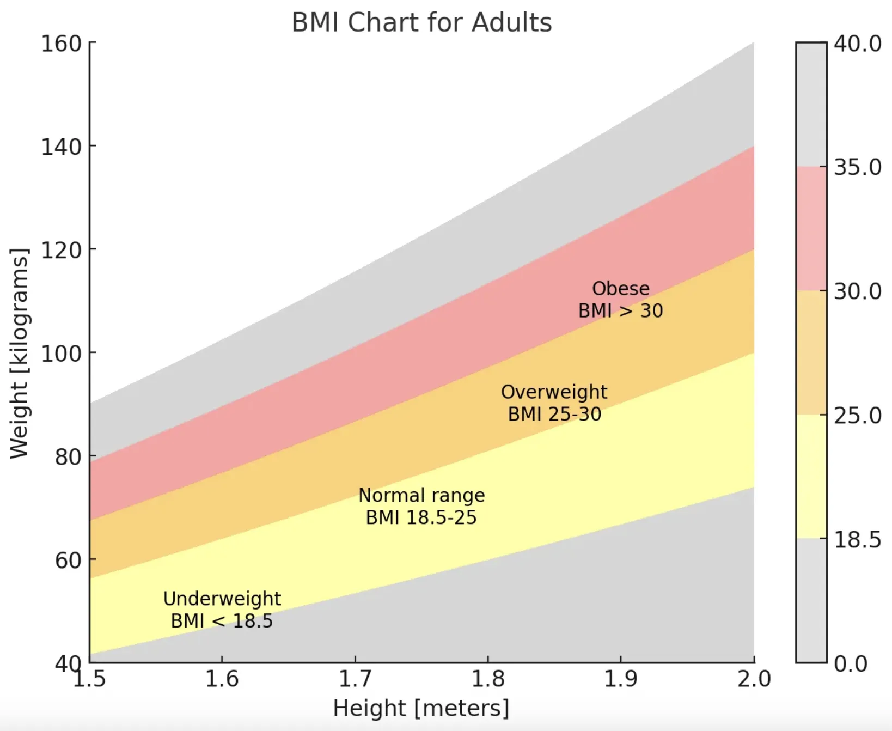

BMI Calculator
This calculator will help you calculate and evaluate your Body Mass Index (BMI).
As a result, it will indicate whether you fall within the underweight, normal, overweight,
or obese class.
Age :
Height (cms):
Weight (kg) :
According to your inputs,
Here is the result
Result
-
- Healthy BMI range: 18.5 kg/m² – 25 kg/m²
The Body Mass Index (BMI) Calculator helps determine your BMI and related weight category, factoring in your age. You can choose the "cm" tab for SI units or the "ft/in" tab to switch to metric measurements.
BMI introduction
BMI is a measure used to assess a person's body fat based on their height and weight, providing an estimate of overall body mass. It serves as a common tool to gauge whether someone’s weight falls within a healthy range relative to their height. The calculated BMI value helps classify individuals into categories such as underweight, normal weight, overweight, or obese. These categories can vary depending on factors like age and region and may also include more specific subgroups like severely underweight or extremely obese. While BMI isn’t a perfect measure of health, it offers a helpful starting point to identify whether further evaluation or action may be needed. You can refer to the table below to view the classification ranges used by this calculator.
BMI table for adults
This is the World Health Organization's (WHO) recommended body weight based on BMI values for adults. It is used for both men and women, age 20 or older.
| Classification | BMI range - kg/m2 |
|---|---|
| Severe Thinness | < 16 |
| Moderate Thinness | 16 - 17 |
| Mild Thinness | 17 - 18.5 |
| Normal | 18.5 - 25 |
| Overweight | 25 - 30 |
| Obese Class I | 30 - 35 |
| Obese Class II | 35 - 40 |
| Obese Class III | > 40 |
BMI chart for adults
This is a graph of BMI categories based on the World Health Organization data. The dashed lines represent subdivisions within a major categorization.
BMI table for children and teens, age 2-20
The Centers for Disease Control and Prevention (CDC) recommends BMI categorization for children and teens between age 2 and 20.
| Category | Percentile Range |
|---|---|
| Underweight | < 5% |
| Healthy weight | 5% - 85% |
| At risk of overweight | 85% - 95% |
| Overweight | > 95% |
BMI chart for children and teens, age 2-20
The Centers for Disease Control and Prevention (CDC) BMI-for-age percentiles growth charts.
Chart for boys Chart for girlsRisks associated with being overweight
Being overweight increases the risk of a number of serious diseases and health conditions. Below is a list of said risks, according to the Centers for Disease Control and Prevention (CDC):
- High blood pressure
- Higher levels of LDL cholesterol, which is widely considered "bad cholesterol," lower levels of HDL cholesterol, considered to be good cholesterol in moderation, and high levels of triglycerides
- Type II diabetes
- Coronary heart disease
- Stroke
- Gallbladder disease
- Osteoarthritis, a type of joint disease caused by breakdown of joint cartilage
- Sleep apnea and breathing problems
- Certain cancers (endometrial, breast, colon, kidney, gallbladder, liver)
- Low quality of life
- Mental illnesses such as clinical depression, anxiety, and others
- Body pains and difficulty with certain physical functions
- Generally, an increased risk of mortality compared to those with a healthy BMI
As can be seen from the list above, there are numerous negative, in some cases fatal, outcomes that may result from being overweight. Generally, a person should try to maintain a BMI below 25 kg/m2, but ideally should consult their doctor to determine whether or not they need to make any changes to their lifestyle in order to be healthier.
Risks associated with being underweight
Being underweight has its own associated risks, listed below:
- Malnutrition, vitamin deficiencies, anemia (lowered ability to carry blood vessels)
- Osteoporosis, a disease that causes bone weakness, increasing the risk of breaking a bone
- A decrease in immune function
- Growth and development issues, particularly in children and teenagers
- Possible reproductive issues for women due to hormonal imbalances that can disrupt the menstrual cycle. Underweight women also have a higher chance of miscarriage in the first trimester
- Potential complications as a result of surgery
- Generally, an increased risk of mortality compared to those with a healthy BMI
In some cases, being underweight can be a sign of some underlying condition or disease such as anorexia nervosa, which has its own risks. Consult your doctor if you think you or someone you know is underweight, particularly if the reason for being underweight does not seem obvious.
Limitations of BMI
Although BMI is a widely used and useful indicator of healthy body weight, it does have its limitations. BMI is only an estimate that cannot take body composition into account. Due to a wide variety of body types as well as distribution of muscle, bone mass, and fat, BMI should be considered along with other measurements rather than being used as the sole method for determining a person's healthy body weight.
In adults:
BMI cannot be fully accurate because it is a measure of excess body weight, rather than excess body fat. BMI is further influenced by factors such as age, sex, ethnicity, muscle mass, body fat, and activity level, among others. For example, an older person who is considered a healthy weight, but is completely inactive in their daily life may have significant amounts of excess body fat even though they are not heavy. This would be considered unhealthy, while a younger person with higher muscle composition of the same BMI would be considered healthy. In athletes, particularly bodybuilders who would be considered overweight due to muscle being heavier than fat, it is entirely possible that they are actually at a healthy weight for their body composition. Generally, according to the CDC:
- Older adults tend to have more body fat than younger adults with the same BMI.
- Women tend to have more body fat than men for an equivalent BMI.
- Muscular individuals and highly trained athletes may have higher BMIs due to large muscle mass.
In children and adolescents:
The same factors that limit the efficacy of BMI for adults can also apply to children and adolescents. Additionally, height and level of sexual maturation can influence BMI and body fat among children. BMI is a better indicator of excess body fat for obese children than it is for overweight children, whose BMI could be a result of increased levels of either fat or fat-free mass (all body components except for fat, which includes water, organs, muscle, etc.). In thin children, the difference in BMI can also be due to fat-free mass.
That being said, BMI is fairly indicative of body fat for 90-95% of the population, and can effectively be used along with other measures to help determine an individual's healthy body weight.
BMI formula
Below are the equations used for calculating BMI in the International System of Units (SI) and the US customary system (USC) using a 5'10", 160-pound individual as an example:
BMI Prime
BMI prime is the ratio of a person's measured BMI to the upper limit of BMI that is considered "normal," by institutions such as the WHO and the CDC. Though it may differ in some countries, such as those in Asia, this upper limit, which will be referred to as BMIupper is 25 kg/m2.
The BMI prime formula is:
Since BMI prime is a ratio of two BMI values, BMI prime is a dimensionless value. A person who has a BMI prime less than 0.74 is classified as underweight; from 0.74 to 1 is classified as normal; greater than 1 is classified as overweight; and greater than 1.2 is classified as obese. The table below shows a person's weight classification based on their BMI prime:
| Classification | BMI | BMI Prime |
|---|---|---|
| Severe Thinness | < 16 | < 0.64 |
| Moderate Thinness | 16 - 17 | 0.64 - 0.68 |
| Mild Thinness | 17 - 18.5 | 0.68 - 0.74 |
| Normal | 18.5 - 25 | 0.74 - 1 |
| Overweight | 25 - 30 | 1 - 1.2 |
| Obese Class I | 30 - 35 | 1.2 - 1.4 |
| Obese Class II | 35 - 40 | 1.4 - 1.6 |
| Obese Class III | > 40 | < 1.6 |
BMI prime allows us to make a quick assessment of how much a person's BMI differs from the upper limit of BMI that is considered normal. It also allows for comparisons between groups of people who have different upper BMI limits.
Ponderal Index
The Ponderal Index (PI) is similar to BMI in that it measures the leanness or corpulence of a person based on their height and weight. The main difference between the PI and BMI is the cubing rather than squaring of the height in the formula (provided below). While BMI can be a useful tool when considering large populations, it is not reliable for determining leanness or corpulence in individuals. Although the PI suffers from similar considerations, the PI is more reliable for use with very tall or short individuals, while BMI tends to record uncharacteristically high or low body fat levels for those on the extreme ends of the height and weight spectrum. Below is the equation for computing the PI of an individual using USC, again using a 5'10", 160-pound individual as an example: